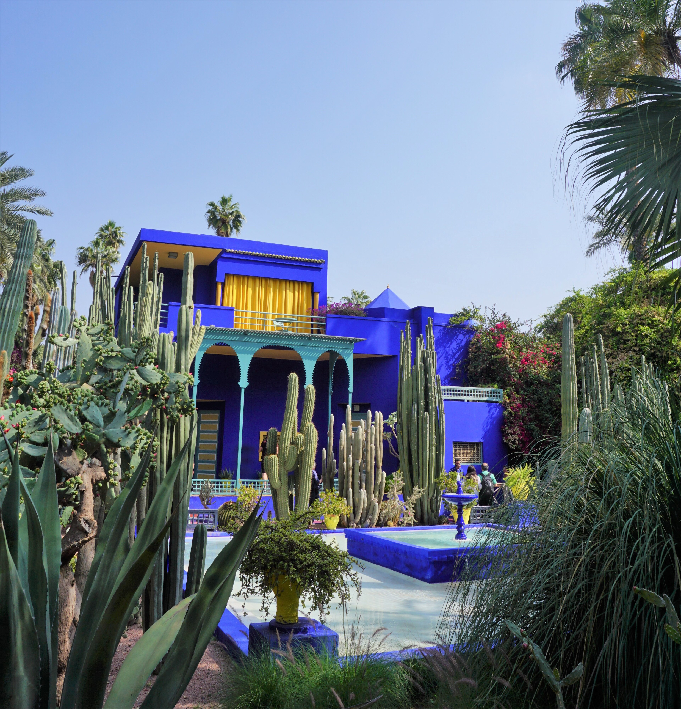

密不透风的仙人掌"植物幕墙"挡在前景,你得从缝隙里才能找到后面的蓝色别墅——像无意中撞进一座私家花园。
仙人掌的竖线、别墅的方块、棕榈的树干彼此呼应，只有栏杆和水池的横线,把这份竖直感"钉"在画面里。
马若雷勒蓝偏紫，柠檬黄窗帘几乎是它的补色——但黄色只占小面积，对比只提神，不抢戏。薄荷绿廊柱是蓝与黄之间的缓冲色。
1931年立体主义建筑师保罗·西诺瓦设计了这栋别墅；1937年前后，马若雷勒自己调配出这抹深蓝并申请专利。
灵感来自马拉喀什的彩色瓷砖、柏柏尔长袍的靛蓝染色。因烈日褪色,花园至今每年都要重新粉刷。
浑身是刺的沙漠仙人掌，被种进了一座色彩浓烈近乎狂欢的花园——粗粝与奢华彼此成就。
1980年险些被拆改建酒店时，伊夫·圣罗兰买下并修复了它；2008年他的骨灰撒在了这里。
马若雷勒1923年买地造园，历时近四十年。晚年离婚被迫卖园，几近拆毁,幸得圣罗兰与贝尔杰救回,如今每年吸引70万+游客。
雅克·马若雷勒的画室别墅，马若雷勒花园，摩洛哥马拉喀什。
摄影 FriedrichFrisch，CC BY-SA 4.0，来自维基共享资源，版权归摄影者所有。赏析文字为原创分析。